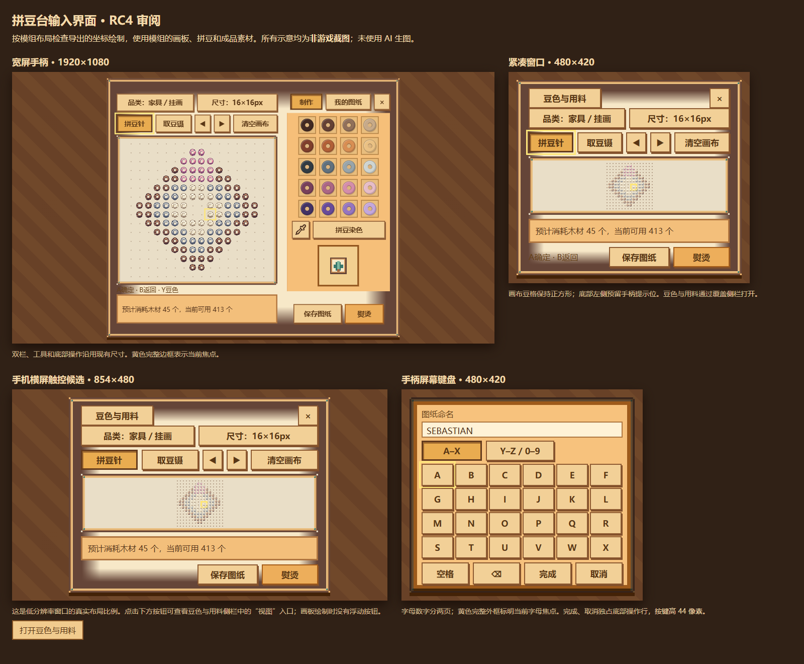

拼豆台 RC4 审阅
下图由模组布局、美术素材和拼豆纹理算法离线生成；全部为非游戏截图，未使用 AI 生图。
宽屏、紧凑窗口与手柄输入

黄色外框显示操作焦点；屏幕键盘当前焦点位于字母 A。豆色中孔与吸管使用现有模组素材。
壁纸与地板的拼豆质感
同一16格纹样重复铺设。左侧为现有纯色图块，右侧按照模组 art.json 的4×4熨烫遮罩与0.65强度合成。实际地图比例和图层仍需游戏内验收。
武器数值已更新
预览只用于审阅界面与纹理。实际联机操作、地图铺设、挥舞手感仍需游戏内检查。